전기공사산업기사 (2010-05-09 기출문제)
1과목: 전기응용
1. 시속 45[km/h]의 열차가 반경 1000[m]의 곡선궤도를 주행할 때 고도 (cant)는 약 몇 [mm]인가? (단, 궤간은 1067[m]이다.)
- 10.3
- 13.4
- 17.0
- 18.0
(정답률: 75%)

2. 반도체 소자 SCR에 대한 설명 중 잘못된 것은?
- SCR은 순방향으로 부성저항을 가지고 있다.
- OFF 상태의 저항은 매우 낮다.
- ON 상태에서는 PN 접합의 순방향과 마찬가지로 낮은 저항을 나타낸다.
- SCR은 실리콘의 PNPN 4층으로 되어 있다.
(정답률: 63%)
3. 3상 농형 유도전동기의 기동법으로 맞지 않는 것은?
- Y-△기동
- 2차 저항에 의한 기동
- 전 전압기동
- 기동 보상기에 의한 기동
(정답률: 83%)
4. 10[Ω]의 저항에 10[A]를 10분간 흘렸을 때의 발열량은?
- 125[kcal]
- 130[kcal]
- 144[kcal]
- 165[kcal]
(정답률: 88%)
5. 열전 온도계의 원리는?
- 펀치효과
- 톰슨효과
- 제벡효과
- 홀 효과
(정답률: 90%)
6. 교류 전기철도 방식의 분류가 아닌 것은?
- 성별
- 변압기별
- 전압별
- 주파수별
(정답률: 58%)
7. 전기로에 사용되는 전극재료의 구비조건이 아닌 것은?
- 전기 전도율이 클 것
- 열의 전도율이 클 것
- 고온에 견디며 기계적 강도가 클 것
- 피열물과 화학작용을 일으키는 일이 적을 것
(정답률: 78%)
8. 소형이고 고율방전 특성이 좋고 수명이 긴 축전지는?
- 페이스트식 연축전지
- 클래드식 연축전지
- 포켓식 알칼리 축전지
- 소결식 알칼리 축전지
(정답률: 63%)
9. 다음 중 정전압 소자로 사용되는 다이오드는 무엇인가?
- 제너 다이오드
- 터널 다이오드
- 포토 다이오드
- 발광 다이오드
(정답률: 90%)
10. 완전 흑체의 온도가 4000[K]일 때 단색 방사발 산도가 최대가 되는 파장은 730[㎛]이다. 최대의 단색 방사발산도가 555[㎛]인 흑체의 온도[K]는?
- 약 5000
- 약 5261
- 약 5383
- 약 5730
(정답률: 69%)
11. 전열기에서 발열선의 지름이 1[%] 감소하면 저항 및 발열량은 몇 [%] 증감되는가?
- 저항 2[%] 증가, 발열량 2[%] 감소
- 저항 2[%] 증가, 발열량 2[%] 증가
- 저항 4[%] 증가, 발열량 4[%] 감소
- 저항 4[%] 증가, 발열량 4[%] 증가
(정답률: 85%)
12. 총 중량이 30[t]이고 전동기 4대를 가진 전동차가 20[%]의 직선궤도를 올라가고 있다. 지금 속도30[km/h], 가속도 1[km/h/s]라면 각 전동기의 출력[kW]은 약 얼마인가? (단, 열차저항은 6[kg/t], 기어장치효율은 0.95로 한다.)
- 25
- 37
- 43
- 51
(정답률: 45%)
13. 휘도가 낮고 효율이 좋으며 투과성이 양호하여 터널조명, 도로조명, 광장조명 등에 주로 사용되는 것은?
- 백열전구
- 형광등
- 나트륨등
- 할로겐등
(정답률: 81%)
14. 어떤 전구의 상반구 광속은 2000[lm], 하반구 광속은 3000[lm]이다. 평균 구면광도는 약 몇 [cd]인가 ?
- 200
- 400
- 600
- 800
(정답률: 48%)
15. 열전도율을 표시하는 단위는?
- [J/kg℃]
- [W/m2℃]
- [W/m℃]
- [J/m3℃]
(정답률: 60%)
16. 그림과 같은 회로에서 전달함수 E(s)/I(s)는?
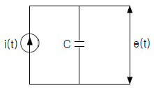
- 1/Cs
- Cs/Cs+1
- Cs+1
- s/Cs+1
(정답률: 75%)
17. 3[m] 떨어진 점의 조도가 200[lx] 이었다면 이 방향의 광도 [cd]는?
- 1800
- 2000
- 2500
- 3000
(정답률: 72%)
18. 평균 수평광도는 200[cd], 구면 확산율이 0.8일 때 백열전구의 전광속 [lm]은 약 얼마인가?
- 2260
- 2009
- 2060
- 3060
(정답률: 59%)
19. 제어기기의 변환량 중 변위를 전압으로 변환하는 요소는?
- 벨로즈
- 노즐 플래퍼
- 가변저항 스프링
- 차동 변압기
(정답률: 70%)
20. 전기철도의 경제적인 운전을 위해 전력소비량을 줄이려면 가속도와 감속도 및 표정속도를 각각 어떻게 하여야 하는가?
- 가속도는 크게, 감속도는 작게, 표정속도는 크게 하여야 한다.
- 가속도와 감속도는 크게, 표정속도는 작게 하여야 한다.
- 가속도와 감속도는 작게, 표정속도는 작게 하여야 한다.
- 가속도와 감속도는 작게, 표정속도는 크게 하여야 한다.
(정답률: 58%)
2과목: 전력공학
21. 3상 2선식 복도체방식의 송전선로를 3상3선식 단도체방식 송전선로와 비교한 것으로 알맞은 것은? (단, 단도체의 단면적은 복도체방식의 소선의 단면적의 합과 같은 것으로 한다.)
- 전선의 인덕턴스는 증가하고, 정전용량은 감소한다.
- 전선의 인덕턴스와 정전용량은 모두 증가한다.
- 전선의 인덕턴스는 감소하고, 정전용량은 증가한다.
- 전선의 인덕턴스와 정전용량은 모두 감소한다.
(정답률: 52%)
22. 3상이고 표준전압 3kV, 600kW를 역률 0.85로 수전하는 공장의 수전회로에 시설하는 계기용 변류기의 변류비로 적당한 것은? (단, 변류기의 2차 전류는 5A이다.)
- 5
- 10
- 20
- 40
(정답률: 22%)
23. 수용가측에서 부하의 무효전력 변동분을 흡수하여 플리커의 발생을 방지하는 대책으로 거리가 먼 것은?
- 부스터 방식
- 동기조상기와 리액터 방식
- 사이리스터 이용 콘덴서 개폐방식
- 사이리스터용 리액터 방식
(정답률: 57%)
24. 가공배전선로의 부하 분기점에 설치하여 선로고장 발생시 선로의 타 보호기기와 협조하여 고장구간을 신속하게 개방하는 개폐장치는?
- 고장구간 자동 개폐기
- 자동 선로 구분 개폐기
- 자동부하 전환 개폐기
- 기중부하 개폐기
(정답률: 36%)
25. 소호 리액터 접지에 대한 설명으로 잘못된 것은?
- 선택지락계전기의 작동이 쉽다.
- 과도안정도가 높다.
- 전자유도장애가 경감한다.
- 지락전류가 작다.
(정답률: 36%)
26. 초호환(arcing ring)의 설치 목적은?
- 애자연의 보호
- 클램프의 보호
- 이상전압 발생의 방지
- 코로나손의 방지
(정답률: 52%)
27. 뒤진 역률 80%, 1000kW의 3상 부학 있다. 이것에 콘덴서를 설치하여 역률을 95%로 개선하려면 콘덴서의 용량은 약 몇 [kVA]인가?
- 240[kVA]
- 420[kVA]
- 630[kVA]
- 950[kVA]
(정답률: 41%)
28. 배전서로에서 손실계수 H와 부하율 F사이에 성립하는 것은? (단, 부하율 F≤1 이다.)
- H ≥ F2
- H ≤ 0
- H = F
- H ≥ F
(정답률: 49%)
29. 배전선로의 접지 목적과 거리가 먼 것은?
- 고장전류의 크기 억제
- 혼촉, 누전, 접촉에 의한 위험 방지
- 이상전압의 억제, 대지전압 저하시켜 보호 장치 작동 확실
- 피뢰기 등의 뇌해 방지 설비의 보호 효과 향상
(정답률: 40%)
30. 선로의 특성 임피던스에 대한 설명으로 알맞은 것은?
- 선로의 길이에 비례한다.
- 선로의 길이에 반비례한다.
- 선로의 길이에 관계없이 일정하다.
- 선로의 길이보다 부하에 따라 변화한다.
(정답률: 52%)
31. 피뢰기의 구비조건으로 틀린 것은?
- 충격 방전 개시 전압이 높을 것
- 상용 주파 방전 개시 전압이 높을 것
- 속류의 차단능력이 충분할 것
- 방전 내량이 크고, 제한 전압이 낮을 것
(정답률: 42%)
32. 수전용 변전설비의 1차측에 설치하는 차단기의 용량은 어느 것에 의하여 정하는가?
- 수전전력과 부하율
- 수전계약용량
- 공급측 전원의 단락용량
- 부하설비용량
(정답률: 52%)
33. 저압 뱅킹 배전방식에서 캐스케이딩 현상이란?
- 전압 동요가 적은 현상
- 변압기의 부하 배분이 불균일한 현상
- 저압선이나 변압기에 고장이 생기면 자동적으로 고장이 제거되는 현상
- 저압선의 고장에 의하여 건전한 변압기의 일부 또는 전부가 차단되는 현상
(정답률: 43%)
34. 3상 동기발전기의 고장전류를 계산할 때, 영상 전류 Io, 정상전류 I1 및 역상전류 I2가 같은 경우는 어느 사고로 볼 수 있는가?
- 선간 지락
- 1선 지락
- 2선 단락
- 3상 단락
(정답률: 34%)
35. 수소냉각발전기에 대한 설명 중 잘못된 것은?
- 풍손이 감소하고 발전기 효율이 상승한다.
- 수소는 공기보다 코로나 발생전압이 낮다.
- 수소는 열전도가 크고 냉각효과가 높다.
- 발전기는 전폐형으로 습기의 침입이 적다.
(정답률: 35%)
36. 유효낙차가 40% 저하되면 수차의 효율이 20% 저하된다고 할 경우 이때의 출력은 원래의 약 몇 [%]인가? (단, 안내 날개의 역량은 불변인 것으로 한다.)
- 37.2[%]
- 48.0[%]
- 52.7[%]
- 63.7[%]
(정답률: 28%)
37. 화력 발전소의 재열기(reheater)의 목적은?
- 급수를 가열한다.
- 석탄을 건조한다.
- 공기를 예열한다.
- 증기를 가열한다.
(정답률: 47%)
38. 전선 a, b, c 가 일직선으로 배치되어 있다. a와 b, b와 c 사이의 거리가 각각 5m 일 때 이 선로의 등가 선간 거리는 약 몇 [m]인가?
- 5[m]
- 6.3[m]
- 6.7[m]
- 10[m]
(정답률: 44%)
39. 장거리 송전선로의 특성을 어떤 회로로 다루는것이 가장 알맞은가?
- 분산부하 회로
- 집중정수 회로
- 분포정수 회로
- 특성 임피던스 회로
(정답률: 49%)
40. 전선 지지점에 고저차가 없는 경간 300m 인 송전선로가 있다. 이도를 8m로 유지할 경우 지지점 간의 전선 길이는 약 몇 [m]인가?
- 300.1[m]
- 300.3[m]
- 300.6[m]
- 300.9[m]
(정답률: 35%)
3과목: 전기기기
41. 220[V] 3상 유도전동기의 전부하 슬립이 4[%]이다. 공급전압이 10[%] 저하된 경우의 전부하 슬립은?
- 4[%]
- 5[%]
- 6[%]
- 7[%]
(정답률: 25%)
42. 다음 기기 중 공장에서 역률을 개선하려고 할 때 쓰이는 기기가 아닌 것은?
- 동기조상기
- 콘덴서용 직렬리액터
- 전력용 콘덴서
- 회전변류기
(정답률: 48%)
43. 동기전동기에 관한 설명으로 잘못된 것은?
- 제동권선이 필요하다.
- 난조가 발생하기 쉽다.
- 여자기가 필요하다.
- 역률을 조정할 수 없다.
(정답률: 42%)
44. 3상 유도전동기의 원선도 작성에 필요한 기본량을 구하기 위한 시험이 아닌 것은?
- 충격전압시험
- 저항측정시험
- 무부하시험
- 구속시험
(정답률: 38%)
45. 부하변동이 심한 부하에 직권전동기를 사용할 때 전기자 반작용을 감소시키기 위해서 설치하는 것은?
- 계자권선
- 보상권선
- 브러시
- 균압선
(정답률: 52%)
46. 직류 전동기의 정출력 제어를 위한 속도 제어법은?
- 워드 레오너드 제어법
- 전압 제어법
- 계자 제어법
- 전기자 저항 제어법
(정답률: 42%)
47. 2차 권선이 무부하 상태에서 변압기 여자 전류의 실효값을 결정하느 요소로 바르게 연결되 것은?
- 1차권선 자기인덕턴스, 1차 단자전압 실효값
- 1차권선 자기인덕턴스, 2차 유기기전력
- 2차권선 자기인덕턴스, 입력전압 실효값
- 2차권선 자기인덕턴스, 2차 유기기전력
(정답률: 31%)
48. 3상 직권 정류자 전동기의 중간 변압기는 고정자 권선과 회전자 권선 사이에 직렬로 접속되는데 이 중간 변압기를 사용하는 중요한 이유는?
- 경부하시 속도의 급상승 방지를 위하여
- 주파수 변동으로 속도를 조정하기 위하여
- 회전자 상수를 감소하기 위하여
- 역회전을 방지하구 위하여
(정답률: 40%)
49. 3상 동기 발전기의 여자 전류가 5[A]일 때 1상의 유기기전력은 440[V]이고 3상 단락전류는 20[A]이다. 이 발전기의 동기 임피던스는?
- 17[Ω]
- 20[Ω]
- 22[Ω]
- 25[Ω]
(정답률: 38%)
50. 200±100[V], 5[kVA]인 3상 유도전압조정기의 직렬권선의 전류는?
- 약 28.9[A]
- 약 20.1[A]
- 약 57.8[A]
- 약 16.7[A]
(정답률: 27%)
51. 변압기의 단락시험과 관련 없는 것은?
- 권선의 저항
- 임피던스 전압
- 임피던스 와트
- 여자 어드미턴스
(정답률: 43%)
52. 10극, 3상 유도전동기가 있다. 회전자는 3상이 고정지시의 2차 1상의 정납이 150[V]이다. 이 회전자를 회전자계와 반대방향으로 400[rpm] 회전시키면 2차 전압은? (단, 1차 전원 주파수는 50[Hz]이다,)
- 150[V]
- 200[V]
- 250[V]
- 300[V]
(정답률: 38%)
53. 정격 전압이 120[V]인 직류 분권 발전기가 있다. 전압 변동율이 5[%]인 경우 무부하 단자전압은?(오류 신고가 접수된 문제입니다. 반드시 정답과 해설을 확인하시기 바랍니다.)
- 114[A]
- 126[V]
- 132[V]
- 138[V]
(정답률: 36%)
54. 전동기에서 회전력이 작용하는 방향으로 맞는 것은?
- 인덕턴스가 증가하는 방향
- 자기저항이 증가하는 방향
- 시스템의 에너지가 증가하는 방향
- 전류가 증가하는 방향
(정답률: 33%)
55. 변압5기에서 권수가 2배가 되면 유기기전력은 몇 배가 되는가?
- 1/2
- 1
- 2
- 4
(정답률: 40%)
56. 2개의 사이리스터로 단상전파정류를 하여 90[V]의 직류 전압을 얻는데 필요한 최대 첨두역전압은 약 얼마인가?
- 141[V]
- 283[V]
- 365[V]
- 400[V]
(정답률: 37%)
57. 선박의 전기추진용 전동기의 소도제어에 가장 알맞은 것은?
- 주파수 변화에 의한 제어
- 극수 변화에 의한 제어
- 1차 회전에 의하 제어
- 2차저항에 의한 제어
(정답률: 42%)
58. 3상 동기 발전기에 무부하 전압보다 90° 늦은 전기자 전류가 흐를 때 전기자 반작용은?
- 교차자화 작용을 한다.
- 자기여자 작용을 한다.
- 감자 작용을 한다.
- 증자 작용을 한다.
(정답률: 51%)
59. 전기자 도체의 굵기, 권수 및 극수가 같을 때 소전류, 고전압을 얻을 수 있는 권선법은?
- 단중 중권
- 단중 파권
- 균압 접속
- 개로권
(정답률: 48%)
60. 어떤 유도전동기가 부하시 슬립(s) 5[%]에서 한상당 10[A]의 전류를 흘리고 있다. 한상에 대한 회전자 유효저항이 0.1[Ω]일 때 3상 회전자출력은?
- 190[W]
- 570[W]
- 620[W]
- 780[W]
(정답률: 27%)
4과목: 회로이론
61. 다음의 회로에서 단자 a, b에 걸리는 전압은?
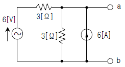
- 12[V]
- 18[V]
- 24[V]
- 6[V]
(정답률: 28%)
62. 다음고 k같은 RC 회로망에서 입력전압을 ei(t), 출력전압을 e0(t)라 할 때 이 요소의 전달함수는?
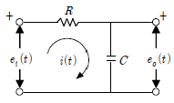
- 1/s+1
- 10/s+1
- 1/10s+1
- 10/10s+1
(정답률: 34%)
63. 대칭 6상 전원이 있다, 환상결선으로 군선에 120[A]의 전류를 흘린다고 하면 선전류는?
- 60[A]
- 90[A]
- 120[A]
- 150[A]
(정답률: 45%)
64. 두 코일의 자기 인덕턴스가 L1[H], L2[H]이고 상호인덕턴스가 M일 때 결합계수 k는?
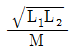
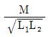
- M2/L1L2
- L1L2/M2
(정답률: 48%)
65. 다음의 회로가 정저항 회로로 되기 위한 C의 값은?
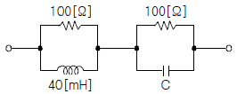
- 4[㎌]
- 6[㎌]
- 8[㎌]
- 10[㎌]
(정답률: 47%)
66. 저항 30[Ω], 용량성 리액턴스 40[Ω]의 병렬회로에 120[V]의 정현파 교류 전압을 가할 때 전체 전류는?
- 3[A]
- 4[A]
- 5[A]
- 6[A]
(정답률: 31%)
67. 선간 전압 200[V], 부하 임피던스 24+j7[Ω]인3상 Y결선의 3상 유효전력은?
- 192[W]
- 512[W]
- 1536[W]
- 4608[W]
(정답률: 40%)
68. 다음과 같은 브리지 회로가 평형이 되기 위한 Z4의 값은?
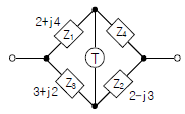
- 2+j4
- -2+j4
- 4+j2
- 4-j2
(정답률: 42%)
69. 어떤 회로 소자에 e=125sin377t[V]를 가했을 때 전류 i=25sin377t[A]가 흐른다면 이 소자는?
- 다이오드
- 순저항
- 유도리액턴스
- 용량리액턴스
(정답률: 40%)
70. △결선된 저항부하를 Y결선으로 바꾸면 소비 전력은? (단, 저항과 선간 전압은 일정하다.)
- 3배
- 9배
- 1/9배
- 1/3배
(정답률: 58%)
71. 기본파의 40[%]인 제 3고조파와 30[%]인 제5고조파를 포함하는 전압파의 왜형률은?
- 0.9
- 0.7
- 0.3
- 0.5
(정답률: 46%)
72. R=50[Ω], L=200[mH]의 직렬회로에 주파수 f=50[Hz]의 교류에 대한 역률은?
- 82.3[%]
- 72.3[%]
- 62.3[%]
- 52.3[%]
(정답률: 35%)
73. 어떤 회로에서 유효전력 80[W], 무효전력 60[var]일 때 역률은?
- 50[%]
- 70[%]
- 80[%]
- 90[%]
(정답률: 46%)
74. 대칭 3상 Y부하에서 각상의 임피던스가 3+j4[Ω]이고 부하전류가 20[A]일 때 이 부하에서 소비되는 전 전력은?
- 1400[W]
- 1600[W]
- 1800[W]
- 3600[W]
(정답률: 32%)
75. 전송선로에서 무손실일 때 L=96[mH], C=0.6[㎌]이면 특성임피던스는?
- 10[Ω]
- 40[Ω]
- 100[Ω]
- 400[Ω]
(정답률: 30%)
76. 어떤 회로망의 4단자 정수가 A=8, B=j2, D=3+j2이면 이 회로망으 C는?
- 2+j3
- 3+j3
- 24+j14
- 8-j11.5
(정답률: 45%)
77. R-L-C 회로망에서 입력전압을 ei(t)[V], 출력량을 전류 I(t)[A]로 할 때, 이 요소의 전달함수는?
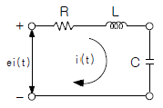
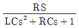
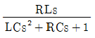
-
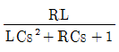
-
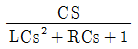
(정답률: 48%)
78. f(t)=3t2 의 라플라스 변환은?
- 3/s2
- 3/s3
- 6/s2
- 6/s3
(정답률: 37%)
79. 다음 함수
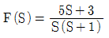
의 역라플라스 변환은?- 2+3e-t
- 3+2e-t
- 3-2e-t
- 2-3e-t
(정답률: 26%)
80. 최대치 100[V], 주파수 60[Hz]인 정현파 전압이 t=0에서 순시치가 50[V]이고 이 순간에 전압이 감소하고 있을 경우의 정현파의 순시치 식은?
- 100sin(150πt+45°)
- 100sin(150πt+135°)
- 100sin(150πt+150°)
- 100sin(150πt+30°)
(정답률: 25%)
5과목: 전기설비
81. 특고압 가공전선로를 가공 케이블로 시설하는 경우 잘못된 것은?
- 조가용선에 행거의 간격은 1m로 시설하였다.
- 조가용선 및 케이블의 피복에 사용하는 금속체에는 제3종 접지공사를 하였다.
- 조가용선은 단면적 22mm2의 아연도강연선을 사용하였다.
- 조가용선에 접촉시켜 금속테이프를 간격 20cm 이하 의 간격을 유지시켜 나선형으로 감아 붙였다.
(정답률: 40%)
82. 정격전류가 15A를 넘고 20A 이하인 배선용차 단기로 보호되는 저압 옥내전로의 콘센트는 정격전류가 몇 [A] 이하인 것을 사용하여야 하는가?
- 15
- 20
- 30
- 50
(정답률: 49%)
83. 사용전압이 440V인 이동기중기용 접촉전선을 애자사용공사에 의하여 옥내의 전개되 장소에 시설하는 경우 사용하는 전선으로 옳은 것은?
- 인장강도가 3.44kN 이상인 것 또는 지름 2.6mm의 경동선으로 단면적이 8mm2 이상인 것
- 인장강도가 3.44kN 이상인 것 또는 지름 3.2mm의 경동선으로 단면적이 18mm2 이상인 것
- 인장강도가 11.2kN 이상인 것 또는 지름 6mm의 경동선으로 단면적이 28mm2 이상인 것
- 인장강도가 11.2kN 이상인 것 또는 지름 8mm의 경동선으로 단면적이 18mm2 이상인 것
(정답률: 40%)
84. 옥내 관등회로의 사용전압이 1000[V]를 넘는 네온 방전등 공사로 적합하지 않는 것은?
- 애자 사용공사에 의한 전선 상호가의 간격은 10cm이상일 것
- 관등회로의 배선은 전개된 장소 또는 점검할 수 있는 은폐된 장소에 시설할 것
- 네온 변압기 외함에느 제3종 접지공사를 할 것
- 애자 사용공사에 의한 전선의 지지점간의 거리는 1m 이하일 것
(정답률: 26%)
85. 일반 주택 및 아파트 각 호실의 현관등으로 백열전등을 설치할 때에는 타임스위치를 설치하여 몇 분이내에 소등되는 것이어야 하는가?
- 1
- 2
- 3
- 5
(정답률: 45%)
86. 고압과 저압전로를 결합하는 변압기 저압측의 중성점에는 제2종 접지공사를 변압기의 시설장소마다 하여야 하나 부득이 하여 가공공동지선을 설치하여 공통의 접지공사로 하는 경우 각 변압기를 중심으로 하는 지름 몇 m 이내의 지역에 시설하여야 하는가?
- 400
- 500
- 600
- 800
(정답률: 26%)
87. 특고압 가공전선과 지지물, 완금류 자주 또는 지선사이의 이격거리는 사용전압 15000V인 경우 일반적으로 몇 cm 이상이어야 하는가?
- 15
- 30
- 50
- 80
(정답률: 19%)
88. 시가지에 시설되어 있는 가공 직류 전차선의 장선에는 가공 직류 전차선간 및 가공 직류 전차선으로부터 60cm 이내의 부분 이외에 접지공사를 할 때, 몇 종접지공사를 하여야 하는가?
- 제1종 접지공사
- 제2종 접지공사
- 제3종 접지공사
- 특별 제3종 접지공사
(정답률: 41%)
89. 저압 또는 고압의 가공 전선로와 기설 가공 약 전류 전선로가 병행할 때 유도작용에 의한 통신상의 장해가 생기지 않도록 전선과 기설 약전류 전선간의 이격 거리는 몇 m 이상이어야 하는가?
- 2
- 3
- 4
- 6
(정답률: 24%)
90. 중성점 직접 접지식 으로서 최대 사용 전압이 161000[V]인 변압기 권선의 절연 내력 시험 전압은 몇 [V]인가?
- 103040
- 115920
- 148120
- 177100
(정답률: 31%)
91. 사람이 접촉할 우려가 있는 제1종 또는 제2종 접지공사에서 지하 75cm로부터 지표상 2m 까지의 접지선은 사람의 접촉우려가 없도록 하기 위하여 어느 것을 사용하여 보호하는가?
- 두께 1mm이상의 콤바인덕트관
- 두께 2mm이상의 합성수지관
- 피막의 두께가 균일한 비닐포장지
- 이음부분이 없는 플로어덕트
(정답률: 39%)
92. 가공전선로의 지지물로서 길이 9m, 설계하중이 6.8kN 이하인 철근 콘크리트주를 시설할 때 땅에 묻히는 깊이는 몇 [m] 이상으로 하여야 하는가?
- 1.2
- 1.5
- 2
- 2.5
(정답률: 42%)
93. 시가지에 시설하는 특고압 가공전선로의 지지물이 철탑이고 전선이 수평으로 2 이상 있는 경우에 전선 상호간의 간격이 4m 미만인 때에는 특고압 가공 전선로 의 경간은 몇 m 이하이어야 하는가?
- 100
- 150
- 200
- 250
(정답률: 20%)
94. 저압 전로에서 그 전로에 지락이 생긴 경우에 0.5초 이내에 자동적으로 전로를 차단하는 장치를 시설하는 경우, 특별 제3종 접지공사의 접지저항 값은 자동 차단기의 정격감도 전류가 30mA일 때 몇 Ω 이하로 하여야 하는가?
- 75
- 150
- 300
- 500
(정답률: 25%)
95. 무선용 안테나 등을 지지하는 철탑의 기초 안전율은 얼마 이상이어야 하는가?
- 1.0
- 1.5
- 2.0
- 2.5
(정답률: 46%)
96. 뱅크용량이 20000kVA 인 전력용 커패시터에 자동적으로 전로로부터 차단하는 보호장치를 하려고 한다. 반드시 시설하여야 할 보호장치가 아닌 것은?
- 내부에 고장이 생긴 경우에 동작하는 장치
- 절연유의 압력이 변화할 때 동작하는 장치
- 과전류가 생긴 경우에 동작하는 장치
- 과전압이 생긴 경우에 동작하는 장치
(정답률: 44%)
97. 지중전선로를 직접 매설식에 의하여 시설할 때, 중량물의 압력을 받을 우려가 있는 장소에 지중전선을 견고한 트라프 기타 방호물에 넣지 않고도 부설할 수 있는 케이블은?
- 염화비닐절연 케이블
- 폴리에틸렌 외장 케이블
- 콤바인 덕트 케이블
- 알루미늄피 케이블
(정답률: 47%)
98. 금속관공사에서 절연 부실을 사용하느 가장 주된 목적은?
- 관의 끝이 터지는 것을 방지
- 관의 단구에서 조영재의 접촉 방지
- 관내 해충 및 이물질 출입 방지
- 관의 단구에서 전선 피복의 손상 방지
(정답률: 39%)
99. 도로 등의 전열장치 시설에 맞지 않는 것은?
- 발열선의 전기공급은 전로의 대지전압 300V 이하일 것
- 콘크리트 기타 견고한 내열성이 있는 것 안에 시설할 것
- 발열선은 그 온도가 80℃를 넘지 않도록 시설할 것
- 발열서은 다른 약전류 전선 등에 자기적인 장애를 줄 것
(정답률: 59%)
100. 전기울타리 시설에 대한 설명으로 알맞은 것은?
- 전기울타리는 사람이 쉽게 출입할 수 있는 곳에 시설할 것
- 전기울타리용 전원장치에 전기를 공급하는 저로의 사용 전압은 600[V] 미만일 것
- 전선과 이를 지지하는 기둥 사이의 이격거리는 2.5[cm] 이상일 것
- 전선과 수목사이의 이격거리는 40[cm] 이상일 것
(정답률: 29%)
cant = (v^2 / (127R + e))
여기서, v는 열차의 속도, R은 곡선의 반경, e는 궤간과 궤도 사이의 수평 거리이다.
따라서, 주어진 값에 대입하면 다음과 같다.
v = 45[km/h] = 12.5[m/s]
R = 1000[m]
e = (1067[m] - 1000[m]) / 2 = 33.5[m]
cant = (12.5^2 / (127*1000 + 33.5)) = 0.017[m] = 17.0[mm]
따라서, 정답은 "17.0"이다.